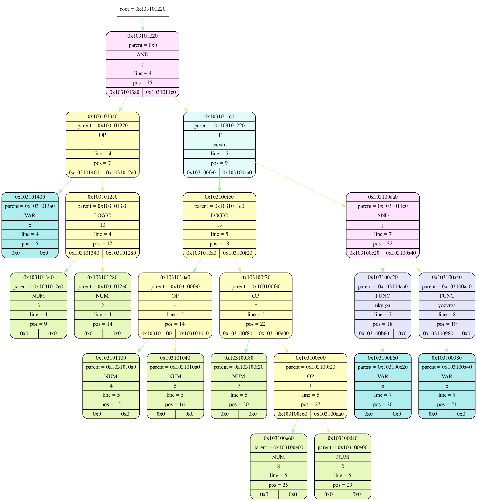

expr_t *expr_ctor(const char *) at ./source/expr.cpp(44):
Tree 0x104a00c50 (OK) "tree" at expr_t *expr_ctor(const char *) at ./source/expr.cpp(36):
{root = 0x104700200}

Tree 0x104a00c50 "tree" at expr_t *expr_ctor(const char *) at ./source/expr.cpp(36): DESTRUCTED